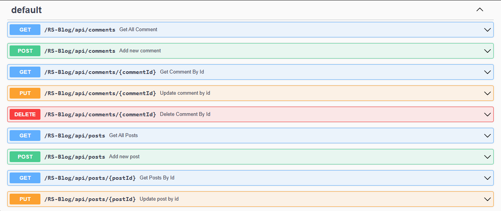

RS-Blog Project - Dalubuhle Dlamini
Overview
RS-Blog is a RESTful web service application designed to manage user data. The project utilizes Jakarta EE for backend services and OpenAPI for API documentation, which is accessible via Swagger UI.
Prerequisites
- Java 17 or later
- Apache Maven 3.6.3 or later
- Apache Tomcat 10.0 or later or GlassFish Server 7.0 or later
- An IDE such as Apache NetBeans or Eclipse
Installation Instructions
Installation on Apache NetBeans
- Click on Open Project and browse for the project, then click Open Project.
- Right-click on the project and go to Properties.
- Click on Run, then select GlassFish 7.0.0 server and JDK 17 or higher.
- Right-click and look for Run Maven, then select Goals.
- In the Goals field, enter
clean install and wait for it to finish.
- Then right-click and select Run.
Installation on Eclipse
- Click on File and select Import.
- In the filter field, enter Maven and select Existing Maven Project, then click Next.
- Click Browse and look for the project, then select Finish.
- Right-click on the project and select Properties, then look for Targeted Runtimes.
- Add GlassFish 7.0.0 server or Apache Tomcat 10.0.0 server and check it.
- Right-click on the project, click on Maven, then Update Project.
- Run the project.
1. Access the Application
Once deployed, access the application at:
- Base URL:
http://localhost:8080/RS-Blog
Swagger UI Screenshot

Example screenshot of Swagger UI with the RS-Blog API documentation.
API Endpoints
- GET /users: Retrieve a list of all users or a paginated subset of users.
- GET /users/{userId}: Retrieve a user by their ID.
- POST /users: Add a new user with the provided details.
- PUT /users/{userId}: Update an existing user by their ID.
- DELETE /users/{userId}: Remove a user from the system by their ID.
- GET /posts: Retrieve a list of all posts or a paginated subset of posts.
- GET /posts/{postId}: Retrieve a posts by their ID.
- POST /posts: Add a new posts with the provided details.
- PUT /posts/{postId}: Update an existing posts by their ID.
- DELETE /posts/{postId}: Remove a posts from the system by their ID.
- GET /comments: Retrieve a list of all comments or a paginated subset of comments.
- GET /comments/{commentId}: Retrieve a comments by their ID.
- POST /comments: Add a new comments with the provided details.
- PUT /comments/{commentId}: Update an existing comments by their ID.
- DELETE /comments/{commentId}: Remove a comments from the system by their ID.